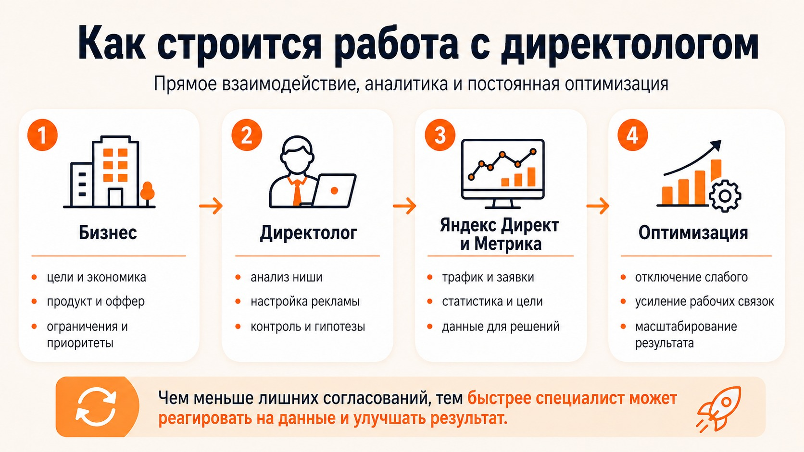

Блог о платном трафике
Услуги директолога
Услуги директолога - это не просто запуск рекламы в Яндекс Директ. Нормальная работа специалиста включает аудит, подготовку стратегии, настройку рекламных кампаний, аналитику, регулярную оптимизацию и контроль качества заявок. Если говорить проще, задача директолога - не привести любой трафик, а помочь бизнесу получать обращения по адекватной стоимости.
Если вам нужен короткий ответ, то в стандартные услуги директолога обычно входят:
- аудит текущей рекламы, сайта и аналитики;
- сбор семантики и проработка структуры кампаний;
- настройка Яндекс Директ и Яндекс Метрики;
- написание объявлений и подготовка креативов;
- запуск рекламы и первичная проверка данных;
- дальнейшее ведение, оптимизация и масштабирование.
Какие услуги директолога обычно нужны бизнесу
Состав работ зависит от задачи. Одному бизнесу нужен запуск с нуля, другому - только аудит, третьему - регулярное ведение уже работающей рекламы.
Чаще всего директолог помогает в трех форматах:
- Разовая настройка - когда нужно собрать и запустить кампании с нуля.
- Аудит рекламы - когда реклама уже идет, но есть вопросы по качеству трафика, стоимости заявок или структуре аккаунта.
- Ведение Яндекс Директ - когда нужен постоянный контроль, корректировки и работа на улучшение результата.
Для большинства проектов самый разумный вариант - не ограничиваться только настройкой. После запуска почти всегда нужны доработки: отключение слабых связок, корректировка ставок, тестирование новых сегментов, переработка объявлений и контроль качества лидов.
Что входит в услуги директолога
1. Аудит текущей ситуации
Если реклама уже запускалась, работа начинается с проверки того, что есть сейчас. Если проект стартует с нуля, директолог все равно оценивает исходные вводные.
Обычно на этом этапе специалист смотрит:
- что именно продает компания;
- кто целевая аудитория;
- какой оффер используется;
- есть ли сильная посадочная страница;
- корректно ли настроена Яндекс Метрика;
- какие кампании уже работали и что по ним происходило;
- какие есть слабые места, из-за которых бюджет может тратиться неэффективно.
На практике проблема часто не только в рекламе. Бывает, что объявления нормальные, но слабый оффер, неудобный сайт, плохо настроенные цели или нет внятной обработки заявок. Хороший директолог смотрит на связку целиком, а не только на интерфейс рекламного кабинета.
Подробнее о результатах - в кейсы по проектам.
2. Подготовка стратегии
После аудита нужно понять, как именно запускать рекламу. В услугу директолога обычно входит подготовка логики будущих кампаний:
- выбор типов рекламных кампаний;
- определение приоритетных направлений;
- разделение по продуктам, услугам, регионам или аудиториям;
- понимание, что запускать в первую очередь, а что оставить на следующий этап;
- формирование гипотез для теста.
Это важный этап, потому что даже хороший технический запуск может не дать результата, если структура изначально построена неправильно.
3. Сбор семантики и минус-фраз
Одна из базовых услуг директолога - подготовка семантики. Речь идет о подборе поисковых запросов, по которым реклама будет показываться, и минус-фраз, которые отсекают нецелевой трафик.
На этом этапе специалист:
- собирает ключевые запросы;
- чистит мусорные и нерелевантные формулировки;
- группирует семантику по смыслу;
- готовит минус-фразы;
- определяет, где лучше использовать поиск, а где РСЯ.
От качества этой работы напрямую зависит, кому именно будет показываться реклама и насколько целевым окажется трафик.
4. Настройка рекламных кампаний
Дальше директолог собирает кампании в Яндекс Директ. Обычно сюда входят:
- создание структуры рекламного аккаунта;
- настройка кампаний и групп объявлений;
- написание объявлений;
- добавление быстрых ссылок, уточнений и других элементов;
- настройка географии, расписания, стратегий и ограничений;
- добавление изображений и креативов, если они нужны формату кампании.
Если проект это требует, специалист может настраивать поиск, РСЯ, ретаргетинг, мастер-кампании, товарные форматы и другие подходящие типы размещения.
5. Настройка аналитики
Без аналитики реклама превращается в угадайку. Поэтому в услуги директолога часто входит и техническая часть, связанная с отслеживанием результата.
Обычно это:
- настройка целей в Яндекс Метрике;
- проверка корректности отправки заявок;
- настройка UTM-меток;
- привязка рекламного кабинета к Метрике;
- проверка, что данные собираются без критичных ошибок.
Если в проекте используется CRM, коллтрекинг или другие инструменты, директолог может участвовать в общей логике передачи данных или ставить задачу на подключение нужных сервисов.
Подробнее - в материале про проверку целей в Яндекс Метрике и статье про настройку UTM-меток.
6. Запуск и первичная проверка
После настройки кампаний работа не заканчивается. Нужно запустить рекламу, проверить показы, клики, заявки, корректность целей и базовую статистику.
На этом этапе специалист обычно:
- проверяет, прошли ли объявления модерацию;
- отслеживает первые переходы и заявки;
- смотрит, нет ли очевидных перекосов по трафику;
- оценивает, как себя ведут разные кампании после старта.
Именно после запуска часто становится понятно, какие гипотезы подтверждаются, а какие нужно быстро корректировать.
7. Ведение и оптимизация
Для бизнеса это обычно самая ценная часть работы. Услуги директолога редко заканчиваются только настройкой. Основной результат появляется уже в процессе ведения.
Ведение Яндекс Директ обычно включает:
- анализ статистики по кампаниям;
- отключение слабых запросов, площадок, сегментов и связок;
- доработку объявлений и креативов;
- корректировку ставок и стратегий;
- добавление новых гипотез;
- масштабирование того, что уже дает результат;
- регулярный контроль стоимости заявки и качества обращений.
Если сказать совсем просто, директолог должен не просто крутить настройки, а принимать решения на основе данных.

Кому подходят услуги директолога
Чаще всего такая услуга нужна:
- бизнесу, который хочет запустить рекламу в Яндексе с нуля;
- компаниям, у которых реклама уже работает, но не устраивает результат;
- проектам, где нужен внешний специалист без найма сотрудника в штат;
- собственникам, которым нужен понятный и прямой контакт с тем, кто реально ведет рекламу.
Услуги директолога особенно полезны, когда у бизнеса уже есть понятный продукт, посадочная страница и готовность работать с аналитикой. Но даже если реклама еще не запускалась, специалист может помочь выстроить стартовую систему и не слить бюджет на первых шагах.
Что получает клиент в итоге
Если убрать общие слова, бизнес обычно покупает не сам факт настройки рекламы, а конкретную работу по привлечению обращений.
В результате клиент получает:
- настроенные рекламные кампании в Яндекс Директ;
- понятную структуру рекламы;
- аналитику и цели для оценки результата;
- регулярную оптимизацию;
- обратную связь по слабым местам сайта, оффера и воронки;
- более управляемый процесс привлечения заявок.
Это и есть нормальная услуга директолога: не разовая техническая настройка ради галочки, а рабочая система, которую можно развивать дальше.
Как строится работа с частным директологом
Для многих компаний важен не только набор услуг, но и формат сотрудничества. Если проект ведет частный специалист, а не агентство, обычно клиент общается напрямую с тем, кто сам настраивает и ведет рекламу.
Это удобно по нескольким причинам:
- меньше лишних согласований;
- быстрее вносятся изменения;
- проще обсуждать гипотезы и результаты;
- выше прозрачность по тому, кто именно отвечает за проект.
Если вам как раз важен вопрос выбора формата, по теме можно отдельно посмотреть материал о том, кого лучше выбрать для Яндекс Директ - агентство или частного специалиста.
Подробнее - в материал о выборе между агентством и директологом.

Как выбрать директолога
При выборе специалиста лучше смотреть не на обещания в духе "будет много заявок", а на более практичные вещи:
- есть ли у специалиста реальные кейсы;
- объясняет ли он, что именно будет делать;
- задает ли вопросы про бизнес, а не только про бюджет;
- интересуется ли сайтом, аналитикой и качеством лидов;
- предлагает ли понятный формат ведения и отчетности;
- может ли объяснить, как будут приниматься решения по оптимизации.
Нормальный директолог не обещает универсальный результат без вводных. Сначала он разбирается в задаче, а уже потом предлагает формат работы.
Формат работы на naklikay.ru
Я занимаюсь Яндекс Директом как частный специалист и веду проекты лично, без передачи помощникам или ученикам. Обычно работа строится так:
- сначала обсуждаем задачу, нишу и текущую ситуацию;
- затем определяем, нужен ли запуск с нуля, аудит или ведение;
- после этого собирается структура работ и запускается реклама;
- дальше проект ведется на основе данных и регулярной оптимизации.
Если нужен постоянный подрядчик по Яндекс Директ, чаще всего имеет смысл смотреть именно на формат ведения, а не только на разовую настройку. Разовый запуск полезен, но без дальнейшей работы реклама редко показывает максимум.
Кейсы - в разделе кейсы по проектам, информация о специалисте - на главной странице.
Частые вопросы
Услуги директолога и настройка Яндекс Директ - это одно и то же?
Не совсем. Настройка - это только часть работы. Услуги директолога шире: они могут включать аудит, стратегию, аналитику, запуск, ведение и оптимизацию.
Нужен ли директолог, если реклама уже работает?
Да, если вы хотите не просто поддерживать кампании, а улучшать результат. Даже работающая реклама почти всегда имеет точки роста.
Можно ли заказать только аудит?
Да. Это нормальный формат, если у вас уже есть действующие кампании и вы хотите понять, что именно в них мешает получать лучший результат.
Когда лучше заказывать ведение, а не только настройку?
Когда вы планируете получать заявки из Яндекс Директ регулярно. Ведение нужно там, где важен не сам запуск, а дальнейшее улучшение результата.
Итог
Услуги директолога - это комплекс работ по запуску и развитию рекламы в Яндекс Директ. В нормальном формате сюда входят аудит, стратегия, настройка, аналитика, запуск и постоянная оптимизация. Если вам нужен не просто технический запуск, а понятная работа на результат, выбирать стоит специалиста, который смотрит на рекламу, сайт и аналитику как на одну систему.